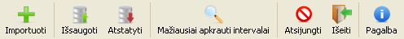
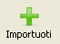
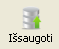
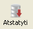
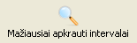
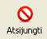
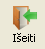
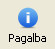

Pagrindinė įrankių juosta
| Elementas | Aprašymas |
|---|---|
|  |
Bylos, su importuojamais duomenimis, parinkimo langui atverti. Šią funkciją leidžiama pasirinkti tik tuomet, jei dabartinis naudotojas turi reikiamas privilegijas. |
|  | Įvykusių pakeitimų išsaugojimui duomenų bazėje. |
|  | Duomenų atstatymui į tuos, kurie yra duomenų bazėje. |
|  | Laisviausių laiko intervalų paieškos nustatymų lauko atidarymui bei uždarymui. |
|  | Naudotojo darbui užbaigti. |
|  | Sistemos uždarymui. |
|  | Pagalbos langui atidaryti. |